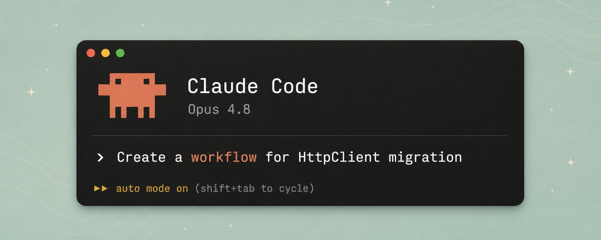

Claude Code Dynamic Workflows：把编排逻辑搬进代码的新原语
计划写进脚本，上下文只留最后答案
先看这五句
- Subagent 的编排者始终是 Claude。每个结果都要回窗口，规模一大就装不下。Workflow 把循环和中间结果写进 JS，主上下文只拿终局。
- 运行时在你本机，而且不含 LLM。脚本只会循环和 await；执行到
agent()才雇一个 subagent。主 Claude 在睡觉，跑完再被叫醒。 - Bun：11 天、约 75 万行 Rust、99.8% 原测试通过。生命周期映射 → 并行文件移植加双 reviewer → 编译测试 fix loop。
- 程序可以有环，一次执行轨迹一定是 DAG。和 n8n 同类：控制流确定；差别是作者是模型、载体是图灵完备代码。
- 强模型是承重墙。和 Opus 4.8 同天发布不是巧合：数百 agent 交叉验证，前提是 reviewer 真的会指出问题。

这是一份阅读笔记，不是原文转载。2026-05-28，Anthropic 随 Opus 4.8 放出 Dynamic Workflows 研究预览。riba2534 把它放进 Claude Code 已有的协作层里看：单个 session、subagent、Agent Teams，下一层是把编排写成可执行脚本。
从 Subagent 到本机运行时
官方原话：有些问题对单次、单个 agent 太大——全服务 bug hunt、上百文件迁移、要从每个角度压测才敢拍板的方案。Workflow 的答案是让 Claude 把编排写成脚本。
A workflow moves the plan into code. … Claude's context holds only the final answer.
常见误解是它跑在 Anthropic 服务端。实际：编排脚本在本机执行，agent() / parallel() / pipeline() 都是本地控制流。真正打模型的是 spawn 出来的 subagent，接口和主对话一样。主 Agent 发出调用后那一回合就结束，脚本独立跑，完了用通知叫醒它。
可复用的东西变了：subagent 和 skill 复用的是一个工作者或一条指令，Workflow 复用的是整套编排逻辑。
脚本、触发与约束
每个脚本以纯字面量 export const meta 开头。数据在 agent 之间靠字符串拼接流动，没有消息总线。最容易踩的坑是 pipeline 和 parallel：后者有屏障，快的要等慢的；只有需要全集去重、按总数提前退出、或横向比较时才真正需要屏障。
三种触发：prompt 里出现 workflow（可 alt+w 忽略高亮）；ultracode 让模型自己判断；已保存的变成 / 命令。项目级优先于个人级。跑前可审脚本，运行中 Ctrl+G 打开代码。
- 最多 16 个并发 subagent（还受 CPU-2 限制），单次最多 1000 个，防死循环烧钱。
- 内部 subagent 默认
acceptEdits，不在允许列表里的命令仍会弹窗。 - 脚本自己没有文件系统和 shell，手脚都在 subagent 上。
- 同会话可 resume，命中未改动的
agent()缓存；退出 Claude Code 后只能重跑。 - 跑起来除权限弹窗外不接受人工输入。
内置 /deep-research：多路搜索、交叉核对、对声明投票，没过的剔除。ultracode 把 effort 拉到 xhigh，并允许自动起 Workflow，token 和耗时都明显高于日常档。
Bun、会话盘点与选型
Bun 从 Zig 迁到 Rust：阶段一单独算每个 struct field 的 Rust lifetime；阶段二数百 agent 并行移植，每个文件两个 reviewer；阶段三 while 循环修编译和测试。之后还有过夜 Workflow 扫多余拷贝、逐个开 PR。官方标注当时还没进生产。
作者用 133 个历史会话做使用画像：主 Agent 先把 jsonl 压成 601 条真实输入，再 10 路分析 + 1 路汇总。11 个 agent、81.8 万 token、254 秒。一把梭的 map-reduce，subagent 也够用；Workflow 真正赚的是阶段变多、要循环、要对抗验证、要扇出到几十个单元的时候。
和 n8n/Coze/Dify：按 Anthropic 定义都是预定代码路径上的 Workflow。差别是作者从人变成模型，载体从可视化 DAG 变成命令式代码——能写循环和动态扇出。AI 介入发生在写代码那一刻，不在跑流程那一刻。官方之前，claude -p 加 shell 循环就是 DIY 版；产品化省的是工程脏活。
适用：全库排查、大规模迁移、高代价决策的对抗验证、长尾清理。一两步修补、需要频繁拍板的探索、安全支付改动，不要用。一句话：跑腿用 subagent，开会用 Agent Teams，流水线用 Workflow。
和 Codex Goals 对照：一个管「往哪走」（目标持久化），一个管「怎么走」（编排代码化）。作者判断一年内这套打法会从研究预览变成 coding agent 标配。